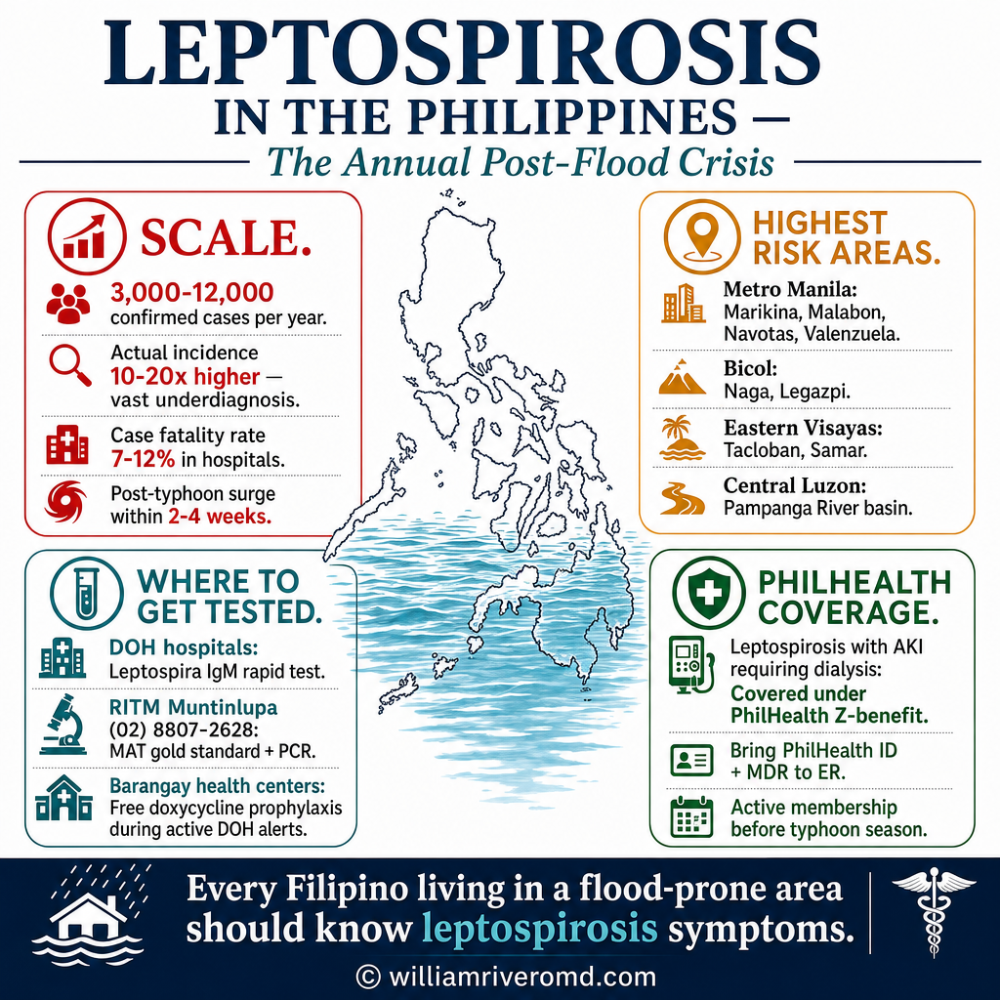

Leptospirosis in the Philippines — The Annual Post-Flood Crisis Leptospirosis sa Pilipinas — Ang Taunang Krisis Pagkatapos ng Baha Leptospirosis sa Pilipinas — Ang Tinuig nga Krisis Human sa Baha Leptospirosis king Pilipinas — Ing Taunang Krisis Kasumpal ning Baha

Leptospirosis is a nationally reportable disease in the Philippines under the Integrated Disease Surveillance and Response (IDSR) system. The DOH records 3,000–12,000 confirmed cases annually, with case fatality rates of 7–12% — but actual incidence is estimated to be 10–20 times higher due to widespread underdiagnosis. Every major typhoon that causes urban flooding is followed within 2–4 weeks by a leptospirosis surge. Ang leptospirosis ay isang pambansang sakit na dapat iulat sa Pilipinas sa ilalim ng Integrated Disease Surveillance and Response (IDSR) system. Nag-rerekord ang DOH ng 3,000–12,000 na kumpirmadong kaso taon-taon, na may case fatality rate na 7–12% — ngunit ang aktwal na insidente ay tinatantyang 10–20 beses na mas mataas dahil sa malawakang kulang-diagnose. Bawat pangunahing bagyo na nagdudulot ng urban flooding ay sinusundan sa loob ng 2–4 na linggo ng pagsabog ng leptospirosis. Ang leptospirosis usa ka nasudnong sakit nga kinahanglan irepurta sa Pilipinas ilalom sa Integrated Disease Surveillance and Response (IDSR) system. Ang DOH nag-rekord og 3,000–12,000 nga nakumpirmahan nga kaso matag tuig, nga adunay case fatality rate nga 7–12% — apan ang aktwal nga insidente gibanabana nga 10–20 ka beses nga mas taas tungod sa halapad nga kulang-diagnose. Ang matag nag-una nga bagyo nga nakapahinabo og urban flooding gisundan sulod sa 2–4 ka semana sa pagsabog sa leptospirosis. Ing leptospirosis metung yang pambansang sakit a dapat iulat king Pilipinas malalam ning Integrated Disease Surveillance and Response (IDSR) system. Ing DOH nag-rerekord ning 3,000–12,000 kumpirmadong kaso taon-taon, adwang case fatality rate na 7–12% — ngunit ing aktwal na insidente tinantyang 10–20 beses na mas mataas dahil king malawak na kulang-diagnose. Nung matubig ing Metro Manila king metung darakal na bagyo, masunod agad king 2–4 santu ing pagsabog ning leptospirosis.
Highest-risk areasMga Lugar na may Pinakamataas na PanganibMga Lugar nga Taas og RisgoDing Lugar a Mataas ing Peligru
Metro Manila: Marikina, Quezon City (Tumana, San Mateo), Malabon, Navotas, Valenzuela — low-lying barangays with dense rat populations and poor flood drainage. Post-Ondoy (2009), leptospirosis was declared an outbreak in Metro Manila with hundreds of cases per week. Bicol Region: Naga, Legazpi — perennial flooding from typhoons entering via San Bernardino Strait. Eastern Visayas: Tacloban, Samar — major flooding risk from Pacific typhoons. Pampanga / Central Luzon: Recurrent flooding from Pampanga River basin. Metro Manila: Marikina, Quezon City (Tumana, San Mateo), Malabon, Navotas, Valenzuela — mga mababang barangay na may siksikang populasyon ng daga at mahinang daloy ng baha. Pagkatapos ng Ondoy (2009), ang leptospirosis ay idineklara na outbreak sa Metro Manila na may daan-daang kaso bawat linggo. Rehiyon ng Bicol: Naga, Legazpi — paulit-ulit na pagbaha mula sa mga bagyo na pumapasok sa pamamagitan ng San Bernardino Strait. Silangang Visayas: Tacloban, Samar — malaking panganib ng pagbaha mula sa mga bagyo sa Pasipiko. Pampanga / Gitnang Luzon: Paulit-ulit na pagbaha mula sa Pampanga River basin. Metro Manila: Marikina, Quezon City (Tumana, San Mateo), Malabon, Navotas, Valenzuela — mga ubos nga barangay nga adunay siksik nga populasyon sa ilaga ug dili maayo nga drainage sa baha. Human sa Ondoy (2009), ang leptospirosis gideklara nga outbreak sa Metro Manila nga adunay gatusan nga kaso matag semana. Rehiyon sa Bicol: Naga, Legazpi — kanunay nga pagbaha gikan sa mga bagyo nga mosulod pinaagi sa San Bernardino Strait. Sidlakang Visayas: Tacloban, Samar — dako nga risgo sa pagbaha gikan sa mga bagyo sa Pasipiko. Pampanga / Sentral nga Luzon: Kanunay nga pagbaha gikan sa Pampanga River basin. Metro Manila: Marikina, Quezon City (Tumana, San Mateo), Malabon, Navotas, Valenzuela — ding mababang barangay a adwang siksikang populasyon ning daga at mahinang drainage ning baha. Kasumpal ning Ondoy (2009), ing leptospirosis ideklara pang outbreak king Metro Manila a adwang daan-daang kaso bawat santu. Rehiyon ning Bicol: Naga, Legazpi — paulit-ulit na pagbaha tikid ding bagyo a pumapasok makaagi king San Bernardino Strait. Silangang Visayas: Tacloban, Samar — dakal na peligru ning pagbaha tikid ding bagyo king Pasipiko. Pampanga / Gitnang Luzon: Paulit-ulit na pagbaha tikid Pampanga River basin.
Where to get tested and treatedSaan Magpasuri at MagpagamotAsa Magpatest ug MagpaayoNokarin Magpasuri at Magpagamot
Diagnosis: Leptospira IgM rapid tests available at most public hospitals. MAT (gold standard) and PCR available at RITM (Research Institute for Tropical Medicine), Muntinlupa City — (02) 8807-2628. Treatment: All DOH-licensed hospitals, public health centers during outbreaks, and PhilHealth-accredited facilities. Chemoprophylaxis dispensing: Available free at many barangay health centers during active DOH leptospirosis alerts — bring valid ID and proof of flood exposure. Diagnosis: Ang mga rapid test ng Leptospira IgM ay makukuha sa karamihang pampublikong ospital. Ang MAT (gold standard) at PCR ay makukuha sa RITM (Research Institute for Tropical Medicine), Muntinlupa City — (02) 8807-2628. Paggamot: Lahat ng ospital na lisensyado ng DOH, mga pampublikong health center sa panahon ng outbreak, at mga pasilidad na accredited ng PhilHealth. Pagbibigay ng chemoprophylaxis: Makukuha nang libre sa maraming barangay health center sa panahon ng mga aktibong alerto ng DOH sa leptospirosis — magdala ng valid na ID at patunay ng pagkakalantad sa baha. Diagnosis: Ang mga rapid test sa Leptospira IgM available sa kadaghanan nga pampublikong ospital. Ang MAT (gold standard) ug PCR available sa RITM (Research Institute for Tropical Medicine), Muntinlupa City — (02) 8807-2628. Pagtambal: Tanan nga ospital nga lisensyado sa DOH, mga pampublikong health center atol sa mga outbreak, ug mga pasilidad nga accredited sa PhilHealth. Paghatag sa chemoprophylaxis: Available nga libre sa daghang barangay health center atol sa mga aktibong alerto sa DOH sa leptospirosis — magdala og valid nga ID ug prueba sa pagkaladlad sa baha. Diagnosis: Ding rapid test ning Leptospira IgM available king karamiyan sa ding pampublikong ospital. Ing MAT (gold standard) at PCR available king RITM (Research Institute for Tropical Medicine), Muntinlupa City — (02) 8807-2628. Paggamot: Lahat ning ospital a lisensyado ning DOH, ding pampublikong health center panahon ning ding outbreak, at ding pasilidad a accredited ning PhilHealth. Pagbibigay ning chemoprophylaxis: Available a libre king dakal na barangay health center panahon ning ding aktibong alerto ning DOH king leptospirosis — magdala ning valid na ID at patunay ning pagkakalantad king baha.
Leptospirosis is a PhilHealth-covered conditionAng Leptospirosis ay Sakop ng PhilHealthAng Leptospirosis usa ka Kondisyon nga Sakop sa PhilHealthIng Leptospirosis Metung yang Kondisyon a Sakop ning PhilHealth
Leptospirosis with complications (including AKI requiring dialysis) is a covered condition under PhilHealth's Z-benefit package and case rate system. Ensure your PhilHealth membership is active before typhoon season. For confirmed leptospiral AKI requiring dialysis at a PhilHealth-accredited facility, coverage can offset a significant portion of hospitalization costs. Bring your PhilHealth ID and MDR (Member Data Record) to the emergency room. Ang leptospirosis na may mga komplikasyon (kasama ang AKI na nangangailangan ng dialysis) ay isang sakop na kondisyon sa ilalim ng Z-benefit package at case rate system ng PhilHealth. Tiyakin na aktibo ang iyong membership sa PhilHealth bago ang panahon ng bagyo. Para sa kumpirmadong leptospiral AKI na nangangailangan ng dialysis sa isang pasilidad na accredited ng PhilHealth, ang saklaw ay maaaring mag-offset ng malaking bahagi ng gastos sa pagpapaospital. Magdala ng iyong PhilHealth ID at MDR (Member Data Record) sa emergency room. Ang leptospirosis nga adunay mga komplikasyon (lakip ang AKI nga nanginahanglan og dialysis) usa ka sakop nga kondisyon ilalom sa Z-benefit package ug case rate system sa PhilHealth. Sigurohon nga aktibo ang imong membership sa PhilHealth antes sa panahon sa bagyo. Para sa nakumpirmahang leptospiral AKI nga nanginahanglan og dialysis sa usa ka pasilidad nga accredited sa PhilHealth, ang saklaw mahimong mag-offset sa daghang bahin sa gasto sa pagpaospital. Magdala sa imong PhilHealth ID ug MDR (Member Data Record) sa emergency room. Ing leptospirosis a adwang ding komplikasyon (kasama ing AKI a kailangan ning dialysis) metung yang sakop na kondisyon malalam ning Z-benefit package at case rate system ning PhilHealth. Tiyakin na aktibo ing membership mu king PhilHealth bago ing panahon ning bagyo. Para king kumpirmadong leptospiral AKI a kailangan ning dialysis king metung pasilidad a accredited ning PhilHealth, ing saklaw maaring mag-offset ning malaking bahagi ning gastos king pagpapaospital. Magdala ning PhilHealth ID mu at MDR (Member Data Record) king emergency room.

W. G. M. Rivero, MD, FPCP, DPSN
Nephrology · Internal Medicine · Philippines
Questions about leptospiral kidney injury, flood-related illness, or AKI management can be directed through the contact page.